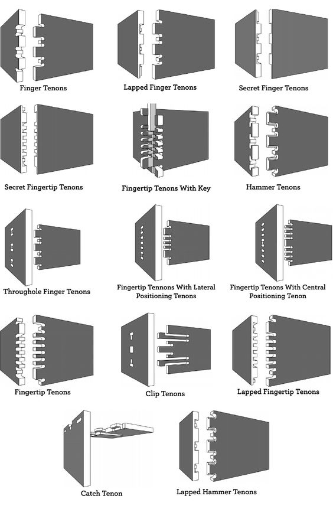
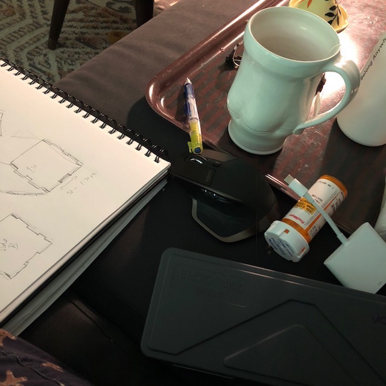
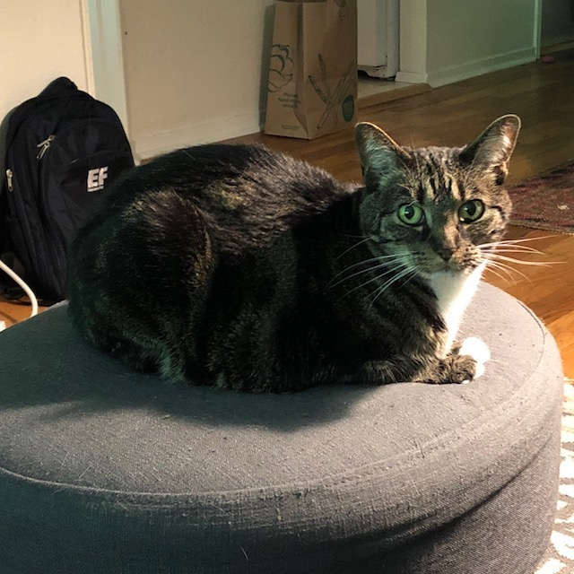

I had a lot of fun resrearching this one and there are so many that I would have liked to try making. In the end I settled on a simple open box with fairly symmetrical sides.
I drew out my overall design and did some visual troubleshooting for how the connections would be made.
I started with the front side, side A, and created the female joins first. Then I moved on to the male joins and the bottom. In assembly I could see any needed refinements to my geometry.
I have been really sick all week and have been working on this piece by piece until my eyes glazed over. I got hung up on the fact that my screen prompts did not look like the example. Tyson and José were very helpful with detailed examples on how to get the file into KiCad and ready for Bantham.
I finally got it into KiCad.
Fortunately Ali, my kitty overlord, was able to keep my spirits up. The final piece will be cut when I am no longer spreading my plague upon the land.
link to my OnShape: https://cad.onshape.com/documents/008160a7b0cdb3c36345a2cf/w/6d15fc0d02c8f8148c7c72a4/e/c35ca5e4e8243443f4c5765a My A side DXF file My B side DXF file My bottom DXF file